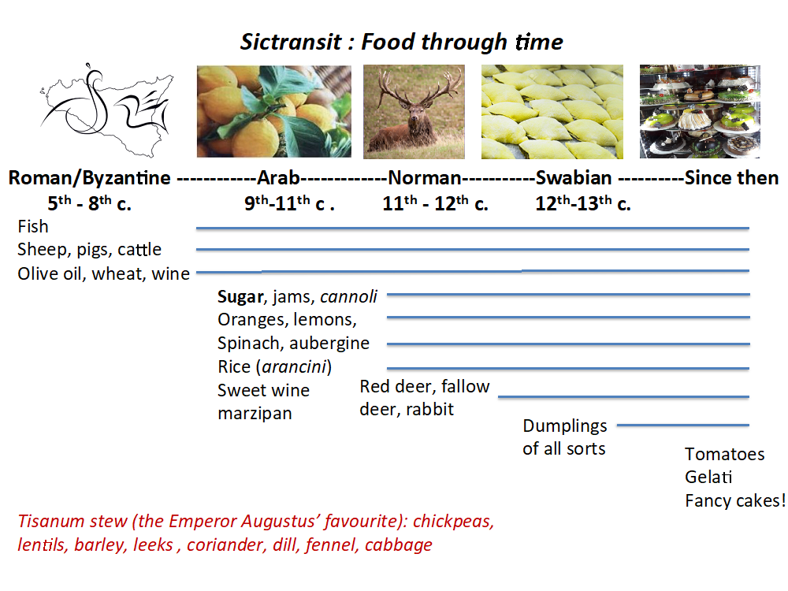

Public Engagement
In addition to 22 public lectures given by the PI and co-director (see below), a public event was held on 16 June 2018 which formed part of the University of York's "Festival of Ideas". It was called A Taste of Ancient Sicily, and its theme was food as a source of history.
The display occupied a quadrangle in King's Manor which was full of families from 10am until 2pm. The BioArch scientists entertained members of the public in a "Science Room" where they showed how their research was discovering what food was eaten in Sicily between the 5th and 13th century and the preferences of different cultures.
It is planned to mount similar events during the next season at Castronovo for school children and to accompany the end-of-dig presentation to the citizens.
Visitors were given a pre-identified character and invited to use the results of analyses to find out who they were. There was an exhibition by our artist-in residence, a specially made film and a ticketed lecture in marquee attended by 170.
Public Lectures
Sept 2014 Castronovo (MC+AM)
Dic. 2014 Vitoria (Espana) (AM)
Feb 2015 York Castronovo project (MC)
May 2015 Palermo Castronovo project (AM)
Sept 2015 Castronovo (MC+AM)
May 2016 Palermo Press conf. (MC+AM)
Jun 2016 BM Sicily (MC)
Jul 2016 York sictransit launch
Sept Castronovo (MC+AM)
Oct 2016 York sictransit (MC)
Dec 2016 Palermo sictransit (AM)
Dec 2016 UCL Accordia sictransit (MC + AM)
Mar 2017 Oxford conflict (MC)
Jul 2017 Oxford Normans (AM)
Sept 2017 Castronovo (MC, AM, Orecchioni, Meo, Canzonieri)
Nov 2017 Cambridge sictransit (MC)
Nov 2017 Rome TV Amphorae conference (AM, MC, OC, LD, PO, AMeo, Viva Sacco, Claudio Capelli)
Dec 2017 Brown University USA Resilience (AM)
Dec 2017 Harvard University USA SicTransit (AM)
Dec 2017 York Normans (MC)
Dec 2017 Newcastle sictransit (MC)
Dec 2017 Hull sictransit (MC)
Feb 2018 UCL sictransit Islamic (MC + AM)
Feb 2018 Rome Crypta Balbi (AM)
March 2018 Siena Dipartimento di Archeologia (AM)
March 2018 Institut für Archäologien, Innsbruck (AM)
Apr 2018 Lecce sictransit (MC)
May 2018 Reading sictransit (MC)
Jun 2018 York Festival of Ideas (MC and BioArCh)
Jun 2018 Palermo archaeozoology (MC, Aniceti)
Jul 2018 Leeds IMC sictransit (MC)
Sep 2018 Barcelona EAA (MC, Fiorentino, Primavera, Lundy, Ughi)
Sep 2018 Castronovo end of dig (AM, MC)
Oct 2018 York Research Celebration (MC)
Oct 2018 London Italian Cultural Institute (MC)
Nov 2018 Palermo In Memoriam Fabiola Ardizzone (AM)
Dec 2018 Pisa Scuola Normale Superiore (AM, MC)
Feb 2019 Aldborough (MC)
Apr 2019 Harvard (MC)
Apr 2019 Istituto Svedese di Studi Classici a Roma/ British School at Rome (AM, GF)
May 2019 Oxford Maison Française (AM, MC, GF)
May 2019 University College London, Italian Towns (MC)
Jun 2019 University of York Festival of Ideas (MC)
July 2019 Rome Sictransit Plenary Seminar (ALL)
2018 season leaflet
For the end of dig in 2018 we prepared a publicity leaflet for the Commune of Castronovo di Sicilia celebrating the archaeology (click to download).
Publications and Communication
Publications
2015 Molinari, Alessandra. "Islamisation" and the Rural World: Sicily and al-Andalus. What kind of archaeology? in Sauro Gelichi and Richard Hodges (eds) New Directions in Early Medieval European Archaeology: Spain and Italy compared. Essays for Riccardo Francovich (Brepols), 187-220.
2016 Molinari, Alessandra. Fortified and Unfortified Settlements in Byzantine and Islamic Sicily: 6th to 11th centuries. In Neil Christie and Hajnalka Herold (eds) Fortified Settlements in Early Medieval Europe. Defended Communities of the 8th to 10th century (Oxford: Oxbow), 320-332.
2016 Carver, Martin and Molinari, Alessandra. Sicily in Transition Research Project. Investigations at Castrononovo di Sicilia. Results and Prospects, 2015 FASTI ONLINE http://www.fastionline.org/docs/FOLDER-it-2016-352.pdf
2017 Carver, Martin and Molinari, Alessandra. Ricerche 2016 a Castronovo di Sicilia. Siciliy in Transition (Progetto ERC advance grant 2016-693600) Notizario Archeologico Soprintendenza Palermo, n.23/2017 https://sicilia.academia.edu/NotiziarioArcheologicoSoprintendenzaPalermo
2018 Carver, Martin, Molinari, Alessandra, Aniceti, Veronica, Colangeli, Francesca, Giannini, Nicoletta, Giovannini, Fabio, Hummler, Madeleine, Mangiaracina, Claudio F, Meo, Antonino and Orecchioni, Paola. Sicily in Transition. Interim report of investigations at Castronovo di Sicilia 2016 FASTI ONLINE http://www.fastionline.org/docs/FOLDER-it-2018-412.pdf
2018 Gelichi, S, Molinari A 2018 (eds) I Contenitori da Trasporto altomedievale e medievale (VIII-XII) secolo nel Mediterraneo. Centro produttori, Contenuti, Retti di Scambio (Atti del Convegno (Roma, 16018 novembre 2017). Published as volume 45 of Archeologia Medievale, pp 9-316.
2019 Carver, Martin, Alessandra Molinari, Veronica Aniceti, Claudio Capelli, Francesca Colangeli, Léa Drieu, Girolamo Fiorentino, Fabio Giovannini, Madeleine Hummler, Jasmine Lundy, Antonino Meo, Aurore Monnereau, Paola Orecchioni, Milena Primavera, Alice Ughi 2019 SICILY IN TRANSITION. New Research on early medieval Sicily, 2017-2018 The Journal of FASTI online http://www.fastionline.org/docs/FOLDER-it-2019-437.pdf
Contributions by members of the sictransit team as follows:
Meo, A Anfore, uomini e reti di scambio sul ‘mare pisano’ (VIII-XII), pp 219-238
Orecchioni, P, Capelli C. Considerazioni di sintesi sulle analisi petrografiche di alcuni contenitori anforici di VIII-XII secolo, pp251-268
Drieu L., Carver M, Craig O. Commodities carried in amphorae AD 600-1200 – New research from Sicily, pp269-274
Molinari A Le anfore medievali come proxy per la storia degli scambi mediterranei tra VIII e XIII secolo? pp293-306
In Preparation/in Press
2016 Carver, Martin. Public works and Private lives: Sicily in transition between four regimes (British Museum)?
2017 Meo, Antonino and Paola Orecchioni. Proceedings of the Rome Amphorae Conference?
2017 Molinari, Alessandra. Ardizzone Festschrift
2018 Carver, Martin. The Norman impact in Sicily and in England compared
Events
2019
30 May 2019 Paola Orecchioni and Antonino Meo attend the British Ambassador’s Party for the Queens’ Jubilee at Villa Igeia, Palermo
June 2019 University of York Festival of Ideas SICTRANSIT Public event 15 June at King’s Manor. Sictransit scientists present their work; visitors sample the historical menu of Sicilian cuisine.
2018
3 February Islamic Archaeology Day Institute of Archaeology UCL—Get tickets at Eventbrite
16 March Research Seminar at King's Manor York—16:15, Lecture Theatre K133
June Palermo archaeozoology
16 June Festival of Ideas Sictransit—Public Event King's Manor 10:00-14:00
July Leeds IMC sictransit
20 Aug—30 Sep FIELDWORK SEASON 2018
Recent Presentations
ROME 16-18 Nov 2017 Amphorae trade 8-12th century
JENA 18-21 Sep 2018 8th International Symposium on Biomolecular Archaeology
ATHENS Oct 2018 12th Conference on Medieval and Modern Mediterranean Ceramics
BARCELONA

2018
10 March Oxford Student Conference Sicily in Transition (Martin)
11 March Oxford Conference on Movement and Conflict
1 July Oxford Conference on Normans in the South (Alessandra)
5 Oct Castronovo di Sicilia Presentation to the town (Alessandra and Martin)
6 Nov Cambridge University Sicily in Transition (Martin)
16 Nov French School in Rome, amphora conference. Sictrans ORA programme (Ol Craig, Lea Drieu)
8 Dec University of York Norman workshop. Normans in Sicily (Martin)
14 Dec University of Newcastle on Tyne. Sictransit (Martin)
20 Dec University of Hull. Sictransit (Martin)
2017
10 March Oxford Student Conference Sicily in Transition (Martin)
11 March Oxford Conference on Movement and Conflict
1 July Oxford Conference on Normans in the South (Alessandra)
5 Oct Castronovo di Sicilia Presentation to the town (Alessandra and Martin)
6 Nov Cambridge University Sicily in Transition (Martin)
16 Nov French School in Rome, amphora conference. Sictrans ORA programme (Ol Craig, Lea Drieu)
8 Dec University of York Norman workshop. Normans in Sicily (Martin)
14 Dec University of Newcastle on Tyne. Sictransit (Martin)
20 Dec University of Hull. Sictransit (Martin)
2016
25 June British Museum Conference on Sicily Culture and Conquest
12 May Palermo Press Conference
28 August Castronovo
22 September Castronovo
Communication
The project website is sicilyintransition.org, which connects to the home websites of the participating institutions; Twitter feed is @sicarch; and the Facebook page is sicilyintransition.
The overall plan for Public impact and research impact is shown in Fig 4.

{kind=link}
{kind=link}
{kind=link}
{kind=link}
{kind=link}
{kind=link}
{kind=link}
{kind=link}
{kind=link}
{kind=link}
{kind=link}
{kind=link}
{kind=link}
{kind=link}
{kind=link}
{kind=link}
{kind=link}
{kind=link}
{kind=link}
{kind=link}
{kind=link}
{kind=link}